Pada tutorial kali ini akan menjelaskan langkah-langkah untuk mendaftarkan akun dan perangkat ke laman TrackerID hingga dapat memonitoring perangkat GPS anda pada dashboard TrackerID.
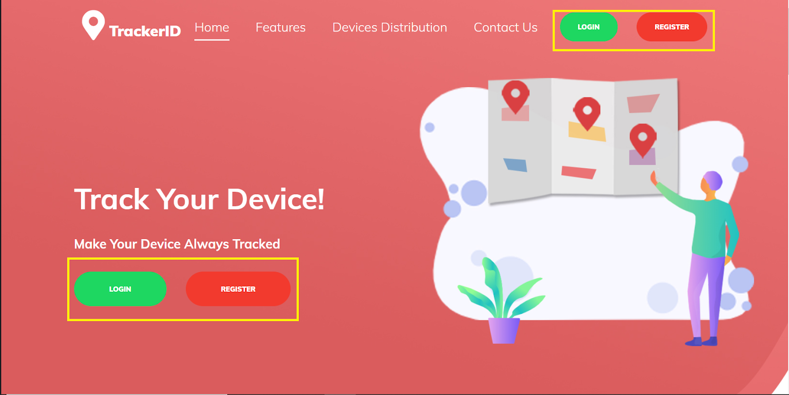
Buka laman website http://tracker.antares.id, jika anda telah memiliki akun maka anda dapat langsung klik tombol LOGIN. Jika anda belum memiliki akun maka silahkan klik REGISTER untuk membuat akun baru.
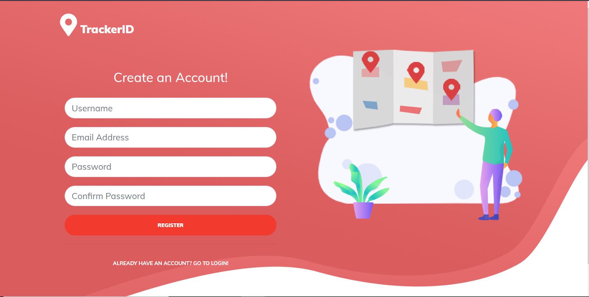
Selanjutnya akan muncul halaman “Create an Account!” dan anda dapat mengisi kolom username,email,dan password sesuai keinginan anda
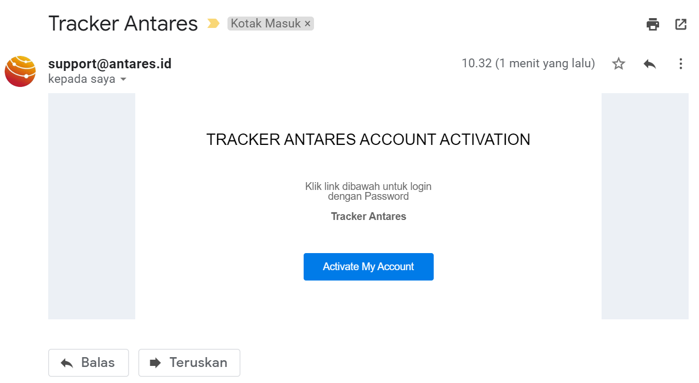
Cek Kotak Masuk pada surel yang telah anda daftarkan pada TrackerID, lalu buka pesan aktivasi yang telah dikirimkan dari support@antares.id dan klik Activate My Account untuk mengaktifasi akun yang anda daftarkan.
Setelah akun diaktifasi maka anda akan dialihkan ke halaman Login pada TrackerID dan silahkan login menggunakan Username/Email serta Password yang sudah anda daftarkan sebelumnya.
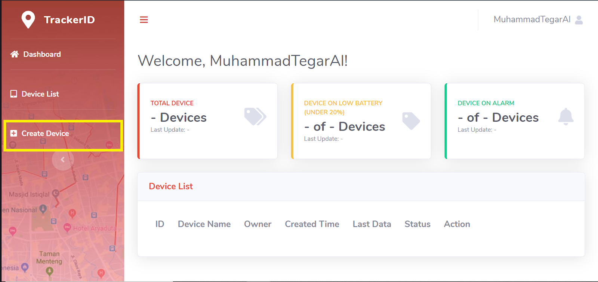
Setelah berhasil login dengan akun TrackerID yang baru saja anda buat, anda akan melihat halaman konsol seperti diatas dan klik Create Device untuk menambahkan perangkat yang anda miliki.
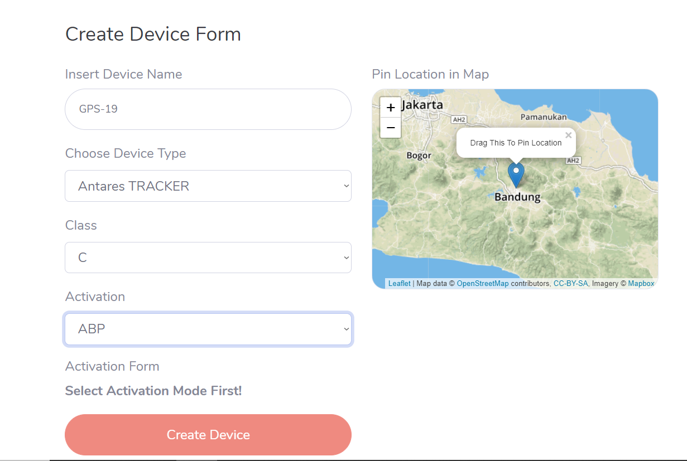
Silahkan isi form pada halaman Create Device dengan informasi berikut,
- Insert Device Name: isikan sesuai dengan label pada perangkat anda
- Choose Device Type: “Antares TRACKER”
- Class: C
- Activation: ABP
Setelah menyelesaikan form tersebut maka akan muncul form tambahan untuk memasukkan beberapa informasi tambahan berupa Device EUI 16 digit, Device Address 8 digit, Application EUI 16 digit, Aplication Session Key 32 digit, Network Session Key 32 digit yang bisa di dapatkan dengan menghubungi pembuat perangkat.
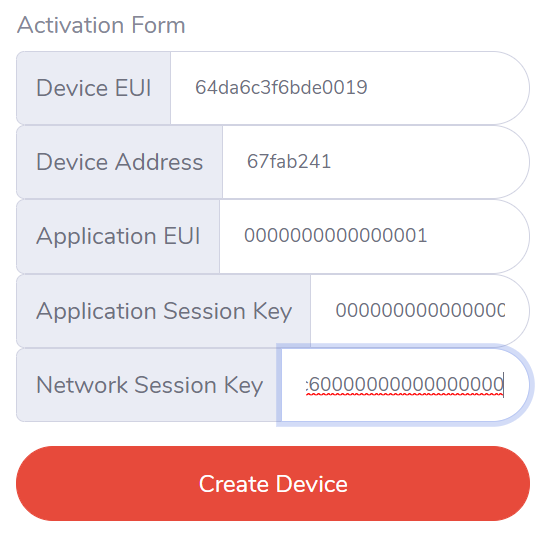
Setelah semua kolom formulir telah diisi dengan benar maka anda dapat klik tombol Create Device. Selanjutnya anda perlu menaktivasi perangkat anda terlebih dahulu.
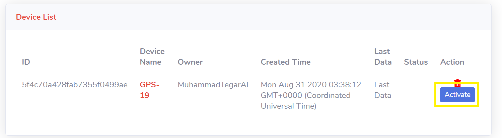
Setelah mendaftarkan perangkat maka anda akan dialihkan ke halaman Device List pada konsol TrackerID dan silahkan aktifkan perngkat anda dengan klik tombol Activate pada Device List.
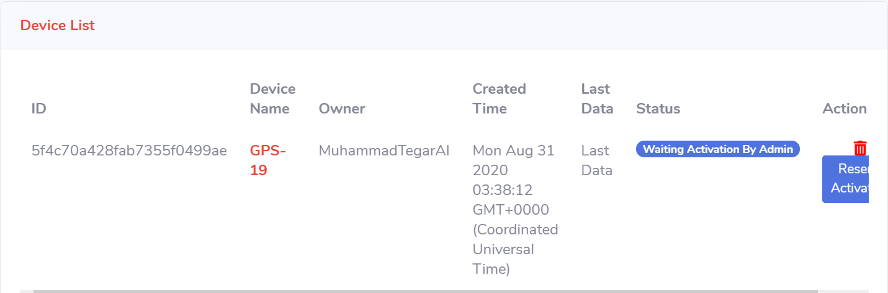
Selanjutnya Status perangkat anda pada Device List akan menampilkan informasi “Waiting Activation By Admin” dan anda dapat menunggu aktivasi yang akan dilakukan oleh admin.
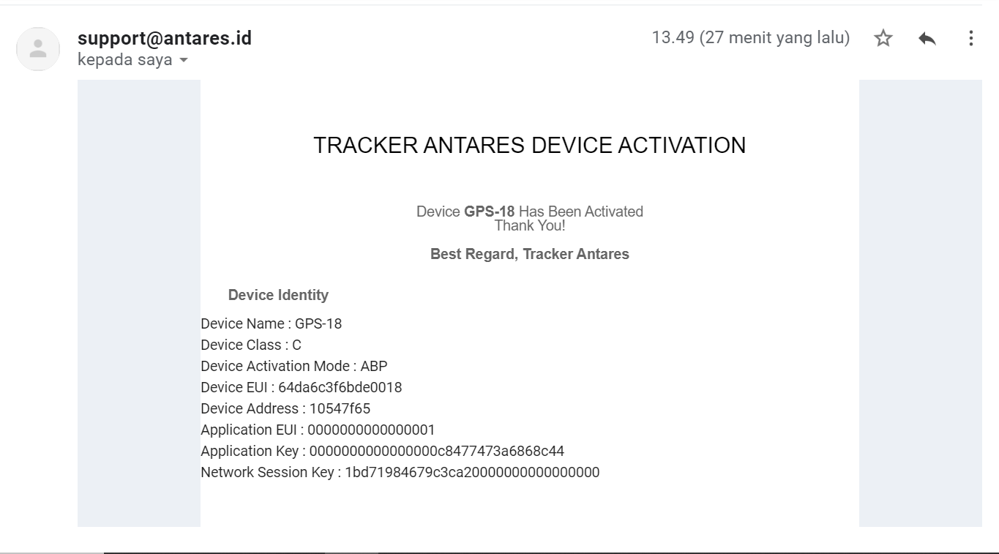
Jika aktivasi sudah berhasil dilakukan oleh admin TrackerID maka anda akan mendapatkan notifikasi pada surel anda berupa pemberitahuan perangkat berhasil diaktifkan.
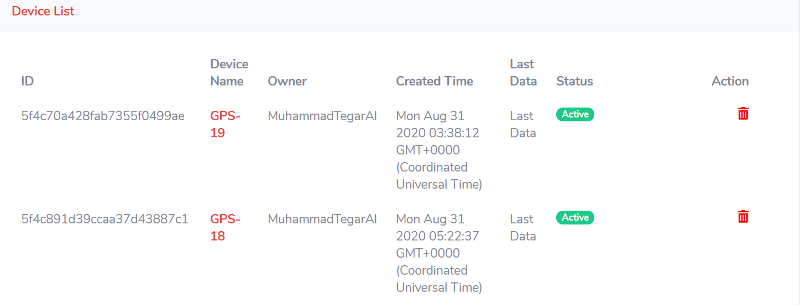
Selanjutnya jika perangkat sudah di aktifkan oleh admin maka Device List akan menampilkan informasi seperti berkut. Setelah mengikuti langkah-langkah diatas maka anda telah dapat memonitoring perangkat GPS anda pada dashboard TrackerID,
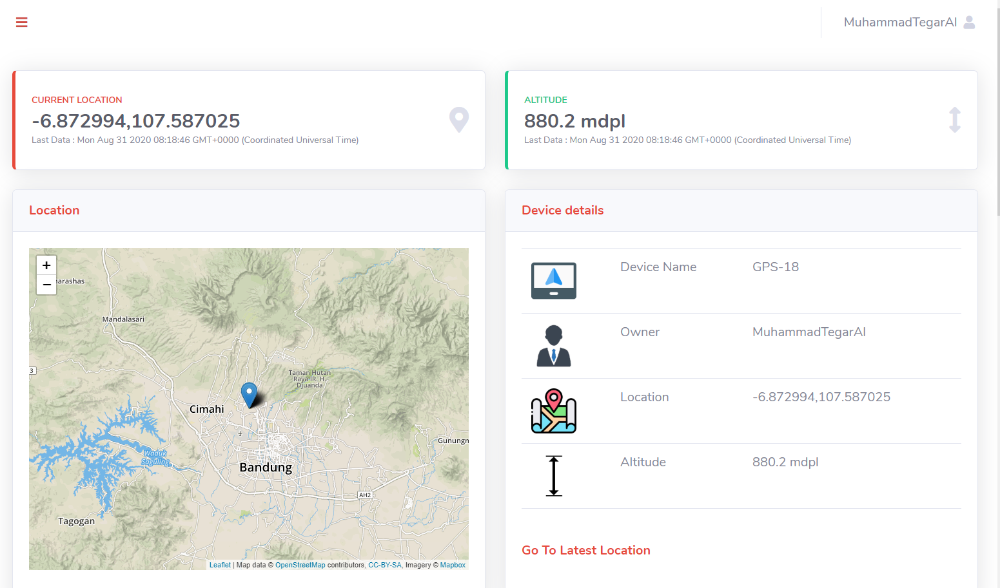
Jika perangkat GPS anda telah terdaftar berhasil mengirimkan data lokasi maka dashboard akan menampilkan informasi seperti diatas.
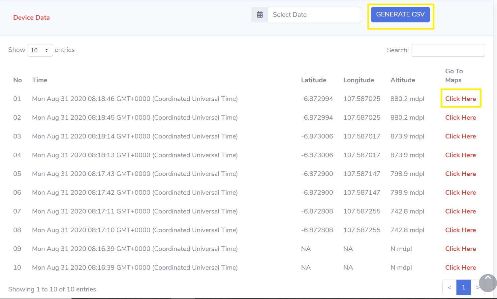
Anda juga dapat mengunduh data pada perangkat anda dalam format .csv dengan klik GENERATE CSV. selain itu anda juga dapat melihat lokasi spesifik pada waktu tertendu dengan klik pada kolom Go To Maps.
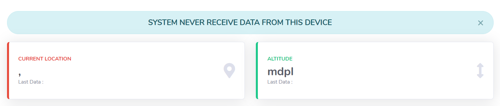
SYSTEM NEVER RECIEVE DATA FROM THIS DEVICE, menunjukkan bahwa perangkat yang terdaftar belum berhasil mengirimkan data kepada TrackerID. Hal ini dapat terjadi karena perangkat yang anda daftarkan tidak mendapat daya atau bisa juga karena kesalahan pada pengisian formulir pada saat pendaftaran perangkat.
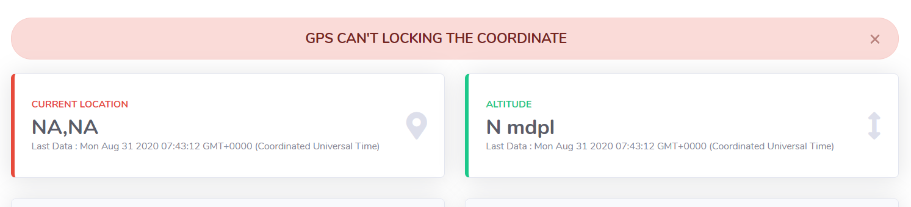
GPS CAN’T LOCKING THE COORDINATE, menunjukkan bahwa perangkat GPS anda dapat mengirim data ke TrackerID namun belum berhasil menentukan lokasi pada modul GPS. Tunggu beberapa waktu hingga perangkat GPS anda berhasil mendapatkan informasi lokasi, jika hal ini terus berlanjut bisa jadi terjadi kerusakan pada modul GPS pada perangkat anda.